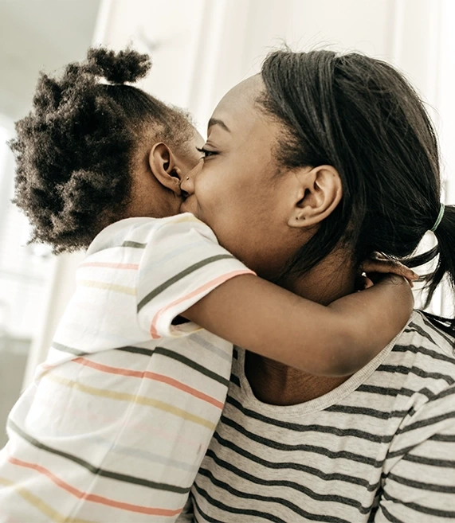
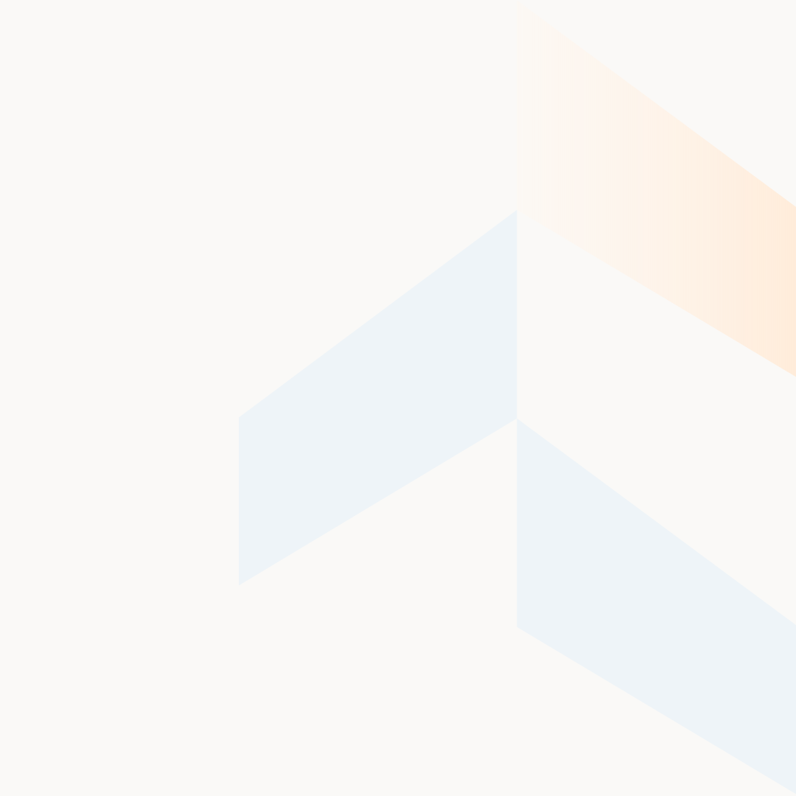
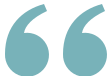
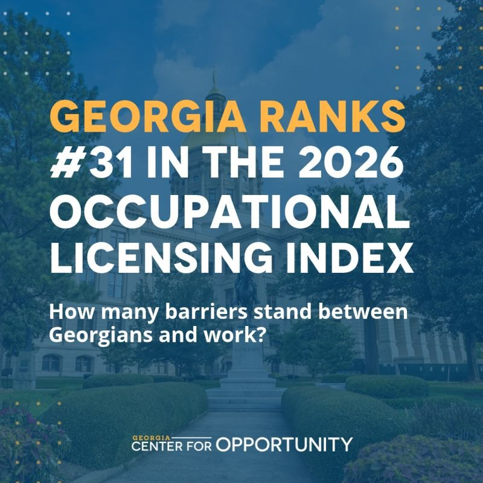
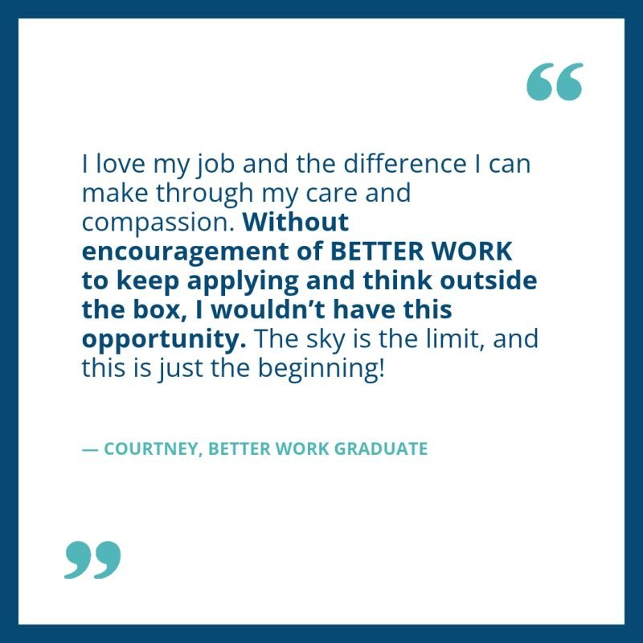
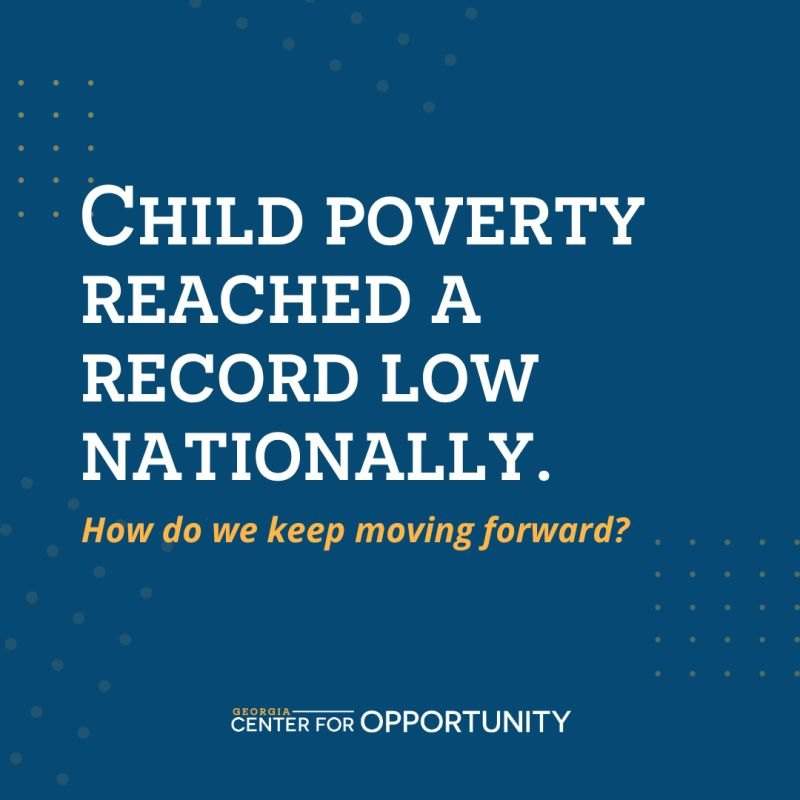
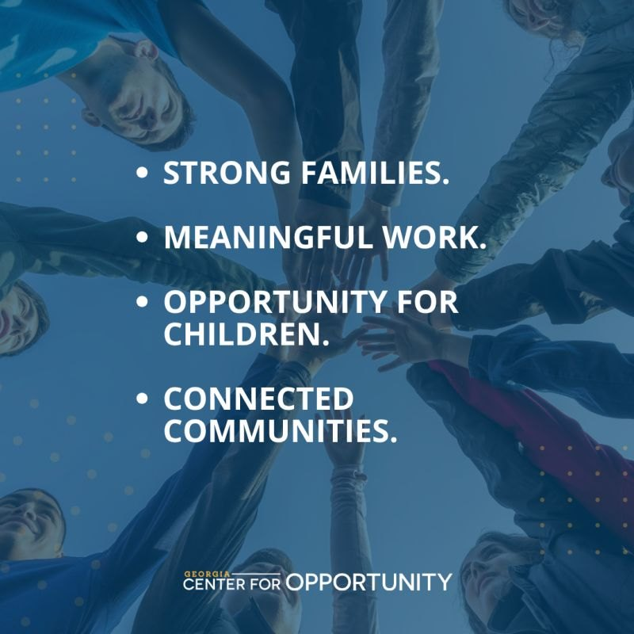
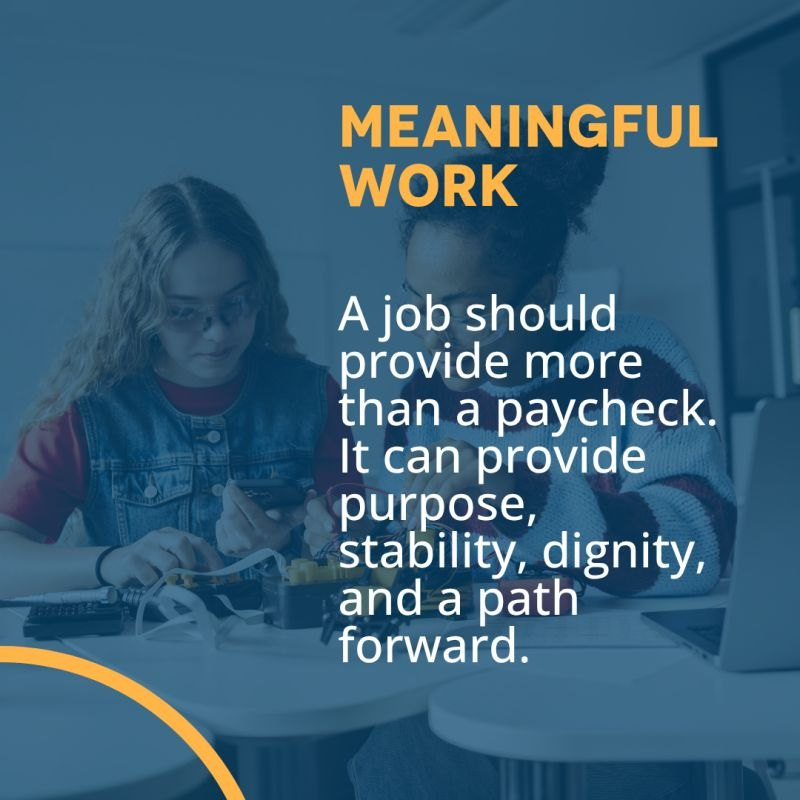
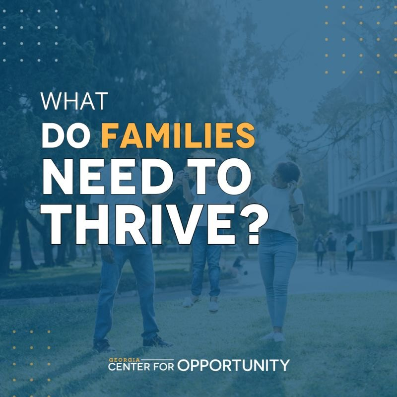

Edition 02 · October 2026Georgia Center for Opportunity
The For Opportunity brand
Room to flourish.
Brand guidelines
A living system for helping Georgia's families see a real path forward, and for making every page, post, report and email feel like one organization.

01 / Foundation
Our foundation
Why we exist, what we're working toward, and the four areas where we focus our work.
We advance solutions that increase opportunity and create durable pathways to prosperity for Georgia's families.
Mission
We advance solutions that increase opportunity and create durable pathways to prosperity for Georgia's families.
Vision
Vibrant communities where everyone can achieve their potential.
What we do
We increase human flourishing by supporting the whole person, strengthening work, relationships, and upward mobility through policy reform, community programs, and local partnerships.
Pillars of Impact
Family Stability
Building healthy relationships, financial stability and supportive home environments.
Economic Mobility
Helping parents find and keep work that sustains their families.
Child Opportunity
Equipping parents to give children the skills and support to thrive in school and life.
Community Connection
Fostering friendships and community ties that provide local support.
How We Make a Difference
Policy
Research, policy solutions, and coalition-building on safety net reform, benefit cliffs, and pathways to work.
Programs
Replicable programs on the ground, including BETTER WORK and Raising Highly Capable Kids.
Partnerships
Addressing poverty isn't a solo endeavor. We work alongside groups already serving their communities.
Principles behind every piece
The whole person
Work, family, purpose and belonging all matter. We never reduce people to a statistic.
Evidence first
Every claim has a source we can show, and we say what we don't know.
Real people, not political parties
We argue for opportunity-focused solutions, not parties or ideologies, and talk about the outcomes of policies and systems rather than people’s motives.
Hope with a plan
We name the barrier, then show the path forward and the next step someone can take.
02 / Logo
Logo
Our stacked wordmark: "Georgia" set small in gold, "Center for" between two fine rules, then "Opportunity" carrying the most weight.
Traced artwork. These vectors are traced from the official logo image on foropportunity.org. Replace them with the designer's original files when you have them. Keep the same file names and everything on this site updates.
Full color: white and light backgrounds (primary)SVG
Leave space equal to the height of the "O" in Opportunity on every side.
Minimum size
160px wide on screen and 1.5 in wide in print. Below that, "Georgia" can't be read.
Placement
Top left on web pages and documents. Bottom left on social posts, aligned to the text margin.
Don't
Stretch or squash it.
Recolor it outside the four approved versions.
Place it on a mid-tone or low-contrast background.
Rotate it or add shadows and effects.
03 / Color
Color
Our palette comes straight from foropportunity.org. Slate carries the brand, warm off-white gives it room, and orange and teal add warmth in small doses.
Balance
Most of any piece is off-white or white, with slate for type and structure. Use orange for one moment per screen.
Off-white + white 55%
Slate 30%
Teal 10%
5%
Contrast pairings
Calculated live from the hex values (WCAG 2.2). Body text needs 4.5:1, and large text (24px+, or 19px semibold) needs 3:1.
Sample
Text on background
Ratio
Use
Orange and teal aren't text colors on light backgrounds. Orange measures about 2.0:1 on white and teal about 2.4:1. The website's orange link hover fails for that reason. Use orange for buttons (with dark ink text), underlines, icons and shapes. Set text in slate on light backgrounds, or white on slate.
04 / Typography
Typography
One family, Inter, used everywhere, just as on our website. Hierarchy comes from size and weight, not from mixing typefaces.
Headlines are sentence case, Semibold, tracked at −2.7% (−0.027em) with 1.1–1.2 line height. Body is Regular at 1.6 line height. Avoid all caps except for very short labels.
the poorthe needyhandoutsvictimsdependencybroken familiesat-risk kidsliberal / conservativegame-changerunprecedented
06 / Messaging
Messaging
Ready-to-use language at every length. Copy it as written, then add what your audience needs.
Core promise
Empowering families to flourish across generations.
01 · The need
Overlapping barriers
Stress at home, limited steady work and thin social support can keep poverty going across generations.
02 · Our approach
The whole person
Policy solutions, community programs and partnerships that strengthen work, relationships, purpose and belonging.
03 · The outcome
Durable prosperity
Vibrant communities where every family can achieve its potential and break the cycle of poverty for good.
One line
Georgia Center for Opportunity empowers families to flourish across generations.
Social bio · under 160 characters
Nonpartisan nonprofit removing barriers to opportunity so Georgia families can flourish across generations. foropportunity.org
Boilerplate · press releases
Georgia Center for Opportunity (GCO) is a nonpartisan 501(c)(3) nonprofit that advances solutions to increase opportunity and create durable pathways to prosperity for Georgia's families. Through policy research, community programs such as BETTER WORK and Raising Highly Capable Kids, and local partnerships, GCO strengthens family stability, economic mobility, child opportunity and community connection. Learn more at foropportunity.org.
Spoken introduction · about 20 seconds
I'm with Georgia Center for Opportunity. We're a nonpartisan nonprofit working so every family in Georgia has a real path to flourish. We fix policies that hold people back, like benefits cliffs, and run programs on the ground, like BETTER WORK, which helps people find and keep good jobs.
Openers by audience
Donors
"Your gift helps a parent land work that sustains their family, and helps change the rules so the next parent doesn't hit the same wall."
Policymakers
"Here's what the data shows about how this rule affects working families in your district, and a practical fix."
Families and participants
"You know your goals. We'll walk alongside you with training, support and people who've been there."
Partners
"You already serve your community. We bring proven programs and research so you can do more of what works."
07 / Photography
Photography
Real Georgians in real moments, such as a Raising Highly Capable Kids class in Lamar County. Photos run in natural color with rounded corners, and we let them breathe.
Our programs, our people
Photograph RHCK classes, BETTER WORK cohorts and partner events. Use participants with signed releases before stock.
Natural and warm
Daylight, true color and candid expressions. No heavy filters, duotones or color tints on the website.
Room for words
Where text sits on a photo, add a slate gradient from the bottom, never a flat color wash over the whole image.
Try the treatment
Upload any photo to see it with a 20px corner and our slate text gradient. The photo stays in your browser.
Original
Families thrive here
Do
Show parents and children together, learning and laughing.
Show people at work: hands busy, faces focused.
Show Georgia: main streets, classrooms, churches, community centers.
Reflect the range of ages, races, family shapes and places we serve.
Don't
Show people as helpless or in distress.
Show children's faces without a guardian's written consent.
Use staged stock poses like thumbs up or handshakes to camera.
Present an AI or stock image as a real participant.
Prompt template for illustrative AI images
Candid documentary photo, natural daylight, true color, [SUBJECT: e.g. parents talking around a table at an evening workshop] in [GEORGIA SETTING: e.g. a church fellowship hall in a small town], genuine expressions, relaxed body language, warm neutral tones, soft background, open space in the [top/right] third for text, no logos, no text, no posed smiles at camera, 35mm, editorial style.
Label AI images as illustrative. Never pair one with a real person's name or quote.
08 / Visual language
Visual language
Soft, open and orderly, with generous off-white space, 20px corners, thin borders and a few warm accents.
The ring. A thick white ring kept very light, fading from 26% to 5% opacity, entering from the top-right corner. Our signature on slate.

The arrow. Pale slate and peach bands that stack into an upward arrow, a nod to upward mobility. Our signature on light backgrounds.
Families flourish
The orange underline. A soft orange marker under one key word per headline, never the whole line.

Teal quote marks. Used to open testimonials on the site and in print.
Spacing · 8px rhythm
81620324864
The website uses 20px between widgets and a 1200px content width. Sections get 64–120px of vertical padding.
Corners
8
20
32
20px is the default for buttons, cards and images. Use 8px for small chips and inputs, and 32px for large feature panels. Cards are white with a 1px border, and never use drop shadows.
Icons
Simple line icons with rounded ends and a 1.5–2px stroke at 24px, in slate on teal-tint tiles. Phosphor (Regular) and Lucide both pair well with Inter. Don't mix sets in one piece.
09 / Background art
Background art
Two shapes from our website do this job: the ring for slate backgrounds and the arrow for light ones. Below, both are redrawn as vectors and cropped to the four sizes we use most.
Anchor the ring to the top-right corner and the arrow to the right edge. Both should always be cropped by the edge of the frame.
One per piece
Use the ring or the arrow, never both. Don't stack copies of a shape or tile it as a pattern.
Keep it as drawn
Don't recolor, rotate or flip the shapes. Keep the ring very light (26% fading to 5% white) so it stays in the background behind text. Scale shapes proportionally.
Calm and unhurried. Text rises into place, the orange line draws in, and the ring drifts in from its corner. Nothing bounces or spins.
Together we are creating lasting impact for Georgians everywhere.
Real stories of transformation.
Moment
Duration
Easing
Notes
Headline rise
600ms
cubic-bezier(0.2, 0.7, 0.2, 1)
Moves up 20px while fading in
Orange line
500ms, 350ms delay
same
Grows from the left
Supporting line
600ms, 500ms delay
same
Follows the line
Ring or arrow
1000ms
ease-out
Fades in while drifting 40px from its corner
Hover on buttons and cards
250ms
ease
Color and border change only, no movement
Respect reduced-motion settings by showing the final frame. In video, keep captions on screen for at least 3 seconds.
11 / Social templates
Social templates
Five templates built on the website system. Edit the text, add a photo and download a PNG for LinkedIn, Instagram or Facebook.
Captions
Lead with the idea in one sentence. Add one line of context, one link and no more than two or three hashtags.
Image descriptions
Always add alt text that repeats every word on the image and briefly describes any photo.
Sizes
Feed: 1080 × 1080. Stories and reels: 1080 × 1920. LinkedIn link image: 1200 × 627.
Our current posts (navy and gold), for reference
Recent posts use a navy and gold palette with Poppins headlines, which differs from the website. The templates above move social onto the website system. Until the switch, finish any series that's already running in its current style.






12 / Guardrails
Guardrails
The rules that protect the people we serve and the trust we've built.
Brand architecture
For Opportunity is our primary public name and web address (foropportunity.org). Georgia Center for Opportunity is the full name, used in the logo, legal copy and formal first references. GCO works after the first reference. BETTER WORK, Raising Highly Capable Kids and School Choice in Georgia always appear with the GCO logo.
Accessibility
Text meets WCAG AA contrast, and orange or teal is never used for text on light backgrounds. Every image has alt text and every video has captions. Color is never the only way information is shown.
Claims and data
Every number has a source and a year we can link to. We write "helped" or "contributed to", never "caused", unless a study shows it.
Stories and consent
Use first names only, with a signed release on file. Anyone under 18 needs written guardian consent and is never named in full. Quotes can be trimmed for length, but never changed in meaning.
Nonpartisan
As a 501(c)(3), we never endorse or oppose candidates or parties. We can discuss legislation and policy. When in doubt, ask before you post.
Files and fonts
Use only the logo files from this site. Inter is free under the SIL Open Font License, so partners and vendors can use it too.


Social templates
Five templates built on the website system. Edit the text, add a photo and download a PNG for LinkedIn, Instagram or Facebook.
Lead with the idea in one sentence. Add one line of context, one link and no more than two or three hashtags.
Always add alt text that repeats every word on the image and briefly describes any photo.
Feed: 1080 × 1080. Stories and reels: 1080 × 1920. LinkedIn link image: 1200 × 627.
Our current posts (navy and gold), for reference
Recent posts use a navy and gold palette with Poppins headlines, which differs from the website. The templates above move social onto the website system. Until the switch, finish any series that's already running in its current style.





